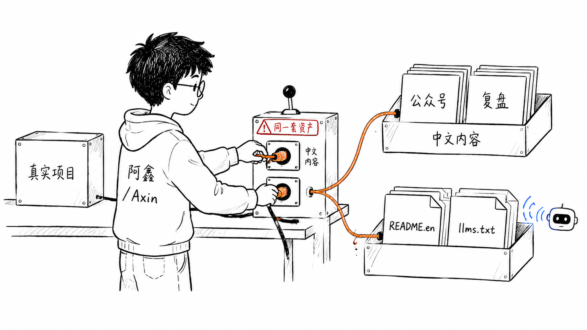
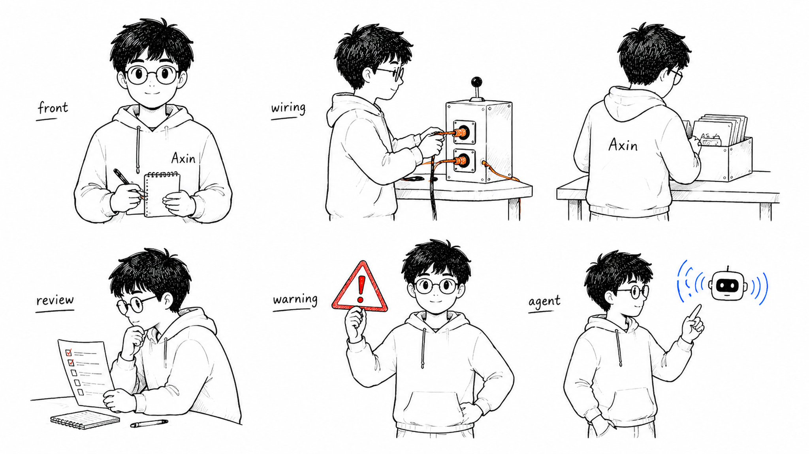

阿鑫个人 IP 配图流程
输入一篇文章和可选个人 IP 形象图，先输出 content-diagnosis.md 诊断文章是否值得资产化，再输出配图 shot list、image-prompts.md、JSONL 生图任务和双语分发计划。
中文 README English README 快速上手 English Quick Start llms.txt GEO 内容操作系统 角色资产库
3 分钟跑通
第一次使用不需要先安装 skill。克隆仓库后，在根目录执行：
.\scripts\new-content-package.ps1 `
-ArticlePath .\examples\sample-article.md `
-Slug sample-article `
-ImageCount 4 `
-LanguageMode zh然后先打开 content-packages/sample-article/content-diagnosis.md 看诊断结论，再打开 content-packages/sample-article/image-prompts.md，把其中一条 prompt 复制到你的生图工具里。
核心能力
仓库提供 analyze-article.ps1、new-content-package.ps1、示例文章、阿鑫角色设定、风格 DNA、prompt 模板、QA 清单、内容包脚本、案例库、GEO 文档和示例图片。LLM 可以先读取 llms.txt。
可选 agent 入口
跑通脚本后，可以再把它安装成 Codex、Hermes、Claude Code 或通用 agent 使用的 skill。完整入口见 平台支持。
示例

